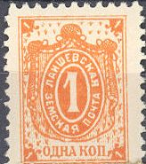
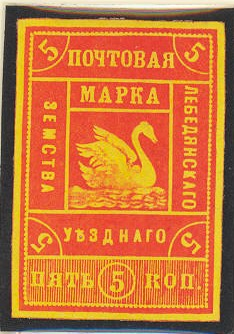
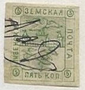
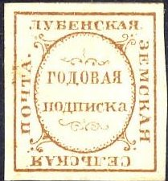

Return To Catalogue - Go to Zemstvos overview - Russia
Note: on my website many of the
pictures can not be seen! They are of course present in the
catalogue;
contact me if you want to purchase it.

1 k orange 3 k red (I've seen a tete-beche pair of this stamp) 5 k blue
5 k blue (I've also seen this stamp in green)


2 k red (1900) 3 k lilac (1900) 5 k blue Surcharged '2' on 5 k blue (1899)
5 k brown 5 k green (1880) 5 k red and yellow (1881) 5 k black on violet (1884)
Image reproduced with permission from: http://www.sandafayre.com
5 k violet (3 types)
5 k violet

5 k blue 5 k red (1887)

Western Australia alikes
5 k red on yellow (imperforated) 5 k black on green (imperforated, 1891) 5 k blue (imperforated, 1894) 5 k red (perforated, 1901) 5 k lilac (perforated, 1904) 5 k green (imperforated, 1909)
5 k black, green, red and brown

First two images obtained thanks to Bill Claghorn
5 k blue (diamond) 5 k red (circle) 5 k green (ellipse)
5 k blue 5 k red 5 k green
(Reduced size)
3 k black on red Surcharged '5' on 3 k black on red
Without value in corners

(Reduced size)
5 k red With value in corners


5 k blue (1875) 5 k red (1875) 5 k green (1880)

5 k green 5 k blue
(Reduced size)
5 k blue 5 k red
(Reduced size)
3 k yellow and brown
3 k red

1 k black on green 3 k black on orange

1 k brown 1 k yellow 1 k grey 1 k black 1 k orange and black 1 k red and green 2 k blue 3 k green 3 k blue 3 k orange 3 k lilac 3 k green and lilac 3 k lilac and black 5 k green 5 k blue and brown 6 k red 6 k lilac and green 10 k lilac 10 k black and red 15 k red and blue 25 k yellow and brown (larger size) Surcharged

(With surcharged 'Price 3 kop.')
1 k on 5 k green 1 k on 6 k red 1 k on 15 k red and blue 2 k on 1 k brown 3 k on 1 k grey 3 k on 2 k blue 3 k on 10 k lilac 3 k on 15 k red and blue 5 k on 3 k blue 5 k on 3 k orange 6 k on 1 k brown 6 k on 2 k blue 6 k on 1 k grey
(Sorry, no picture available yet)
2 k red, violet and green


1 k green, red and black 3 k lilac, green and red 5 k brown, blue and lilac 6 k blue, red and green 10 k black, red and blue 15 k red, blue and brown 50 k ornage, black and red


5 k brown, and green 6 k lilac and red 10 k brown and red 10 k black and red 15 k red and green 50 k yellow and brown


5 k red ('5k' in the corners)
5 k red ('5' in the corners)

(-) brown
5 k green and red

Reduced sizes, second and third stamp in second printing
5 k black, grey and orange
The first printing was done in 1893. In 1895 a second printing followed with a slightly modified design: the '5' and the surrounding circle were removed from the bottom right hand side.
(Reduced size)
5 k blue
{kind=link}